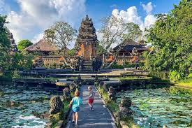
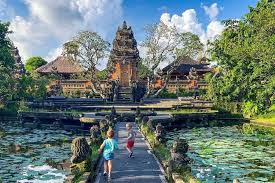

Bali
Bali terkenal dengan pantai-pantainya yang indah, budaya yang kaya, dan kehidupan malam yang semarak. Destinasi populer termasuk Pantai Kuta, Ubud, dan Tanah Lot.
 
 
Yogyakarta
Yogyakarta adalah pusat budaya Jawa yang menawarkan berbagai situs bersejarah seperti Candi Borobudur, Candi Prambanan, dan Keraton Yogyakarta.


Lombok
Lombok terkenal dengan pantai-pantainya yang menakjubkan, Gunung Rinjani, dan Gili Islands yang menawarkan pengalaman menyelam dan snorkeling yang luar biasa.